전산응용토목제도기능사 (2014-01-26 기출문제)
1과목: 토목제도(CAD)
1. 골재의 전부 또는 일부를 인공 경량골재를 써서 만든 콘크리트로서 기건 단위질량이 1400~2000kg/m2인 콘크리트는?
- 유동화 콘크리트
- 경량골재 콘크리트
- 폴리머 콘크리트
- 프리플레이스 콘크리트
(정답률: 84%)

2. 90° 표준갈고리를 가지는 주철근은 구부린 끝에서 얼마 더 연장되어야 하는가? (단, db는 철근의 공칭지름이다.)
- 4db
- 6db
- 9db
- 12db
(정답률: 68%)
3. 다음중 아래 보기의 ( )에 알맞은 것은?
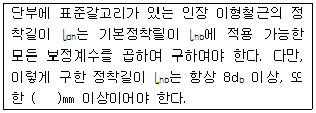
- 150
- 200
- 250
- 300
(정답률: 43%)
4. 단철근 직사각형 보에서 철근 콘크리트 휨부재의 최소 철근량을 규정하고 있는 이유는?
- 부재의 부착강도를 높이기 위하여
- 부재의 경제적인 단면 설계를 위하여
- 부재의 급작스러운 파괴를 방지하기 위하여
- 부재의 재료를 절약하기 위하여
(정답률: 71%)
5. 시방배합을 현장배합으로 고칠 경우에 고려하여야 할 사항으로 옳지 않은 것은?
- 굵은 골재 중에서 5㎜ 체를 통과하는 잔골재량
- 잔골재량 중 5㎜ 체에 남는 굵은 골재량
- 골재의 함수 상태
- 단위 시멘트량
(정답률: 59%)
6. 철근 콘크리트 보의 배근에 있어서 주철근의 이음 장소로 옳은 것은?
- 보의 중앙
- 지점에서 d/4인 곳
- 이음하기에 가장 편리한 곳
- 인장력이 가장 작게 발생하는 곳
(정답률: 72%)
7. 옥외의 공기가 흙에 직접 접하지 않는 철근 콘크리트슬래브의 경우 D35 이하의 철근을 사용하였다면 최소 피복두께는?
- 20mm
- 30mm
- 40mm
- 50mm
(정답률: 39%)
8. 강도 설계법에서 ɑ=β1·c 식 중 콘크리트의 설계기준강도(fck)가 30MPa일 때 β1 값은? (단, ɑ = 등가 직사각형 응력분포의 깊이, c = 압축연단에서 중립축까지의 거리)
- 0.850
- 0.836
- 0.756
- 0.736
(정답률: 52%)
9. 직경 100mm의 원주형 공시체를 사용한 콘크리트의 압축강도 시험에서 압축하중이 300kN에서 파괴가 진행되었다면 압축강도는?
- 18.8MPa
- 25.4MPa
- 32.5MPa
- 38.2MPa
(정답률: 33%)
10. 띠철근 기둥에서 축방향 철근의 순간격은 최소 몇 mm 이상이어야 하는가?
- 40mm
- 60mm
- 80mm
- 100mm
(정답률: 60%)
11. 마주 보는 두 변으로만 지지되는 슬래브를 무엇이라 하는가?
- 1방향 슬래브
- 2방향 슬래브
- 3방향 슬래브
- 4방향 슬래브
(정답률: 65%)
12. 정지된 보의 설계에서 정역학적 균형 방정식 조건으로 옳은 것은? (단, 수평력 H, 수직력 V, 모멘트 M이다.)
- ∑H = 0, ∑V = 0, ∑M = 0
- ∑H = 0, ∑V = 1, ∑M = 1
- ∑H = 1, ∑V = 1, ∑M = 0
- ∑H = 1, ∑V = 1, ∑M = 1
(정답률: 54%)
13. 폭 b=400mm, 유효깊이 d=500mm인 단철근 직사각형보에서 인장철근비는? (단, 철근의 단면적 AS=4,000m2 임)
- 0.02
- 0.03
- 0.04
- 0.⑤
(정답률: 56%)
14. 골재알이 공기 중 건조 상태에서 표면 건조 포화 상태로 되기까지 흡수하는 물의 양을 무엇이라고 하는가?
- 함수량
- 흡수량
- 유효흡수량
- 표면수량
(정답률: 70%)
15. 콘크리트의 압축강도에 영향을 미치는 요인에 대한 설명으로 틀린 것은?
- 적정한 온도와 수분으로 양생하면 강도가 높아진다.
- 물-시멘트비가 높을수록 강도가 높다.
- 좋은 재료를 사용할수록 강도가 높아진다.
- 재령기간이 길수록 강도가 높아진다.
(정답률: 69%)
16. 철근콘크리트 휨부재에 철근을 배치할 때 철근을 묶어서 다발로 사용하는 경우에 대한 설명으로 틀린 것은?
- 휨부재의 경간 내에서 끝나는 한 다발철근 내의 개개 철근은 40db 이상 서로 엇갈리게 끝나야 한다.
- 반드시 이형철근이라야 하며, 묶는 개수는 최대 5개 이하이어야 한다.
- D35를 초과하는 철근은 보에서 다발로 사용할 수 없다.
- 다발철근은 스터럽이나 띠철근으로 둘러싸져야 한다.
(정답률: 58%)
17. 토목 재료로서의 콘크리트 특징으로 옳지 않은 것은?
- 콘크리트는 자체의 무게가 무겁다.
- 재료의 운반과 시공이 비교적 어렵다.
- 건조 수축에 의해 균열이 생기기 쉽다.
- 압축강도에 비해 인장강도가 작다.
(정답률: 70%)
18. 철근의 이음방법이 아닌 것은?
- 용접 이음
- 겹침 이음
- 신축 이음
- 기계적 이음
(정답률: 83%)
19. 비례한도 이상의 응력에서도 하중을 제거하면 변형이 거의 처음 상태로 돌아가는데, 이때의 한도를 칭하는 용어는?
- 상항복점
- 극한강도
- 탄성한도
- 소성한도
(정답률: 78%)
20. 단철근 직사각형 보의 공칭 휨 강도가 320kN·m로 계산되었다. 강도설계 시 이 보에 대한 설계강도는?
- 256kN·m
- 272kN·m
- 320kN·m
- 384kN·m
(정답률: 43%)
2과목: 철근콘크리트
21. PS 강재에서 필요한 성질로만 짝지어진 것은?
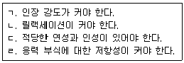
- ㄱ, ㄴ, ㄷ
- ㄱ, ㄴ, ㄹ
- ㄴ, ㄷ, ㄹ
- ㄱ, ㄷ, ㄹ
(정답률: 71%)
22. 포스트 텐션 방식에서 PS 강재가 녹스는 것을 방지하고, 콘크리트에 부착시키기 위해 시스 안에 시멘트 풀 또는 모르타르를 주입하는 작업을 무엇이라고 하는가?
- 그라우팅
- 덕트
- 프레시네
- 디비다그
(정답률: 84%)
23. 자중을 포함하여 P=2,700kN인 수직 하중을 받는 독립 확대 기초에서 허용 지지력 Pɑ=300kN/m2일 때, 결제적인 기초의 한 변의 길이는? (단, 기초는 정사각형임)
- 2m
- 3m
- 4m
- 5m
(정답률: 65%)
24. 하천, 계곡, 해협 등에 가설하여 교통 소통을 위한 통로를 지지하도록 한 구조물을 무엇이라 하는가?
- 교량
- 옹벽
- 기둥
- 슬래브
(정답률: 75%)
25. 콘크리트 구조물에 일정한 힘을 가한 상태에서 힘은 변화하지 않는데 시간이 지나면서 점차 변형이 증가되는 성질을 무엇이라 하는가?
- 탄성
- 크랙
- 소성
- 크리프
(정답률: 73%)
26. 한 개의 기둥에 전달되는 하중을 한 개의 기초가 단독으로 받도록 되어 있는 확대 기초는?
- 말뚝 기초
- 벽 확대 기초
- 군 말뚝 기초
- 독립 확대 기초
(정답률: 84%)
27. 철근 콘크리트의 장점이 아닌 것은?
- 내구성, 내화성, 내진성이 크다.
- 다른 구조에 비하여 유지 관리비가 많이 든다.
- 여러 가지 모양과 치수의 구조물을 만들 수 있다.
- 각 부재를 일체로 만들 수 있으므로, 전체적으로 강성이 큰 구조가 된다.
(정답률: 78%)
28. 강 구조에 사용하는 강재의 종류에 있어서 녹슬기 쉬운 강재의 단점을 개선한 강재는?
- 일반 구조용 압연 강재
- 내후성 열간 압연 강재
- 용접 구조용 압연 강재
- 이음용 강재
(정답률: 67%)
29. 하중을 분포시키거나 균열을 제어할 목적으로 주철근과 직각에 가까운 방향으로 배치한 보조 철근은?
- 띠철근
- 원형 철근
- 배력 철근
- 나선 철근
(정답률: 66%)
30. 토목 구조물의 특징이 아닌 것은?
- 공용기간이 짧다.
- 다량생산이 아니다.
- 일반적으로 규모가 크다.
- 대부분 자연환경 속에 놓인다.
(정답률: 78%)
31. 콘크리트구조기준의 기둥에 대한 정의로 옳은 것은?
- 벽체에 널말뚝이나 부벽이 연결되어 있지 않고, 저판 및 벽체만으로 토압을 받도록 설계된 구조체
- 외력에 의하여 발생하는 응력을 소정의 한도까지 상쇄할 수 있도록 미리 압축력을 작용시킨 구조체
- 지붕, 바닥 등의 상부 하중을 받아서 토대 및 기초에 전달하고 벽체의 골격을 이루는 수직 구조체
- 축력을 받지 않거나 축력의 영향을 무시할 수 있을 정도의 축력을 받는 구조체
(정답률: 72%)
32. 철근의 기호 표시가 SD50이라고 할 때, “50”이 의미하는 것은?
- 인장 강도
- 압축 강도
- 항복 강도
- 파괴 강도
(정답률: 60%)
33. 강 구조의 특징 중 구조 재료로서의 강재의 장점이 아닌 것은?
- 강 구조물은 공장에서 사전 조립이 가능하다.
- 다양한 형상과 치수를 가진 구조로 만들 수 있다.
- 내구성이 우수하여 관리가 잘된 강재는 거의 무한히 사용할 수 있다.
- 반복 하중에 대하여 피로가 발생하기 쉬우며, 그에 따라 강도 감소가 일어날 수 있다.
(정답률: 50%)
34. 캔틸레버식 역 T형 옹벽의 주철근을 가장 잘 배근한 것은?
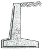
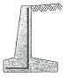
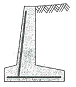
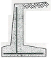
(정답률: 53%)
35. 교량에 작용하는 주하중은?
- 활하중
- 풍하중
- 원심하중
- 충돌하중
(정답률: 66%)
36. 그림은 어떤 상태의 지면을 나타낸 것인가?
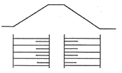
- 수준면
- 지반면
- 흙깎기면
- 흙쌓기면
(정답률: 76%)
37. 컴퓨터 운영체제가 아닌 것은?
- 유닉스,(unix)
- 리눅스(linux)
- 윈도우즈(windows)
- 액세스(access)
(정답률: 62%)
38. 건설 재료 단면의 표시방법 중 모래를 나타낸 것은?
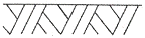
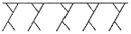
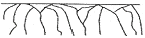
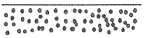
(정답률: 85%)
39. 치수 기입 방법에 대한 설명으로 옳은 것은?
- 치수 보조선과 치수선은 서로 교차하도록 한다.
- 치수 보조선은 각각의 치수선보다 약간 길게 끌어내어 그린다.
- 원의 지름을 표시하는 치수는 숫자 앞에 R을 붙여서 지름을 나타낸다.
- 치수 보조선은 치수를 기입하는 형상에 대해 평행하게 그린다.
(정답률: 51%)
40. 선의 종류 중에서 치수선, 해칭선, 지시선 등으로 사용되는 선은?
- 가는실선
- 파선
- 일점쇄선
- 이점쇄선
(정답률: 71%)
3과목: 토목일반구조
41. 골재의 단면 표시 중 그림은 어떤 단면을 나타낸 것인가?
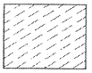
- 호박돌
- 사질토
- 모래
- 자갈
(정답률: 84%)
42. 굵은 실선의 용도로 알맞은 것은?
- 외형선
- 치수선
- 대칭선
- 중심선
(정답률: 83%)
43. 그림과 같은 종단면도에서 측점간의 거리는 20m, 측점의 지반고는 NO 0에서 100m, NO 1에서 106m이고, 계획선의 경사가 3%일 때 NO 1의 계획고는? (단, NO 0의 계획고는 100m이다.)
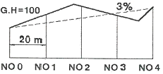
- 100.6m
- 101.3m
- 103.5m
- 1⑤.6m
(정답률: 42%)
44. 도면을 사용 목적, 내용, 작성 방법 등에 따라 분류할 때 사용목적에 따른 분류에 속하는 것은?
- 부품도
- 계획도
- 공정도
- 스케치도
(정답률: 67%)
45. 토목제도 작업에서 도면 치수의 단위는?
- ㎜
- ㎝
- m
- ㎞
(정답률: 91%)
46. 그림은 어느 재료 단면의 경계를 표시한 것인가?
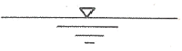
- 흙
- 물
- 암반
- 잡석
(정답률: 87%)
47. CAD 작업의 특징으로 옳지 않은 것은?
- 도면의 출력과 시간 단축이 어렵다.
- 도면의 관리, 보관이 편리하다.
- 도면의 분석, 제작이 정확하다.
- 도면의 수정, 보완이 편리하다.
(정답률: 88%)
48. 컴퓨터에 사용되는 용어인 “버스”에 대한 설명으로 옳은 것은?
- 컴퓨터 내부에서 발생한 데이터가 이동하는 연결 통로
- 아날로그 신호와 디지털 신호를 서로 바꾸어 주는 장치
- 컴퓨터가 통신망에 접속할 수 있도록 설치한 접속 카드
- 종이에 표시한 마크를 광학적으로 판독하여 입력하는 장치
(정답률: 66%)
49. 투상법은 보는 방법과 그리는 방법에 따라 여러 가지 종류가 있는데, 투상법의 종류가 아닌 것은?
- 정투상법
- 등변 투상법
- 등각 투상법
- 사투상법
(정답률: 73%)
50. 도면을 접어서 보관할 대 기본적인 도면의 크기는?
- A1
- A2
- A3
- A4
(정답률: 84%)
51. 철근 표시법에 따른 설명으로 옳은 것은?
- ⓐø13 : 철근 기호(분류 번호) ⓐ의 지름 13mm의 이형 철근(일반 철근)
- ⓑD16 : 철근 기호(분류 번호) ⓒ의 지름 16mm의 원형 철근
- ⓒH16 : 철근 기호(분류 번호) ⓒ의 지름 16mm의 이형 철근(고강도 철근)
- 24ⓐ150=3600 : 전장 3600mm를 24mm로 150등분
(정답률: 54%)
52. 도면에 그려야 할 내용의 영역을 명확하게 하고, 제도용지의 가장자리에 생기는 손상으로 기재 사항을 해치지 않도록 하기 위하여 그리는 선은?
- 윤곽선
- 외형선
- 치수선
- 중심선
(정답률: 65%)
53. 제도 통칙에서 그림의 모양이 치수에 비례하지 않아 착각될 우려가 있을 때 사용되는 문자 기입 방법은?
- AS
- NS
- KS
- PS
(정답률: 65%)
54. 구조물 설계를 위한 일반적인 도면의 작도순서로 옳은 것은?
- 단면도-일반도-철근상세도-주철근조립도-배근도
- 단면도-일반도-배근도-철근상세도-주철근조립도
- 단면도-배근도-일반도-주철근조립도-철근상세도
- 단면도-배근도-철근상세도-주철근조립도-일반도
(정답률: 54%)
55. 건설 재료에서 콘크리트를 나타내는 단면 표시는?
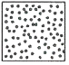
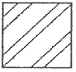
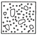
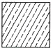
(정답률: 86%)
56. 정투상도는 어떠한 방법으로 그리는 것을 윈칙으로 하는가?
- 제1각법
- 제2각법
- 제3각법
- 제4각법
(정답률: 84%)
57. 직선의 길이를 측정하지 않고, 선분 AB를 5등분하는 그림이다. 두 번째에 해당하는 작업은?
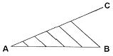
- 평행선 긋기
- 임의의 선분(AC) 긋기
- 선분 AC를 임의의 길이로 5등분
- 선분 AB를 임의의 길이로 다섯 개 나누기
(정답률: 57%)
58. 척도에서 물체의 실제 크기보다 확대하여 그리는 것은?
- 축척
- 현척
- 배척
- 실척
(정답률: 84%)
59. 도면을 철하지 않을 경우 A3 도면 윤곽선의 최소 여백 치수로 알맞은 것은?
- 25㎜
- 20㎜
- 10㎜
- 5㎜
(정답률: 60%)
60. 제도에 사용하는 문자에 대한 설명으로 옳지 않은 것은?
- 영자는 주로 로마자 대문자를 쓴다.
- 숫자는 아라비아 숫자를 쓴다.
- 서체는 한 가지를 사용하며, 혼용하지 않는다.
- 글자는 수직 또는 25° 정도 오른쪽으로 경사지게 쓴다.
(정답률: 85%)